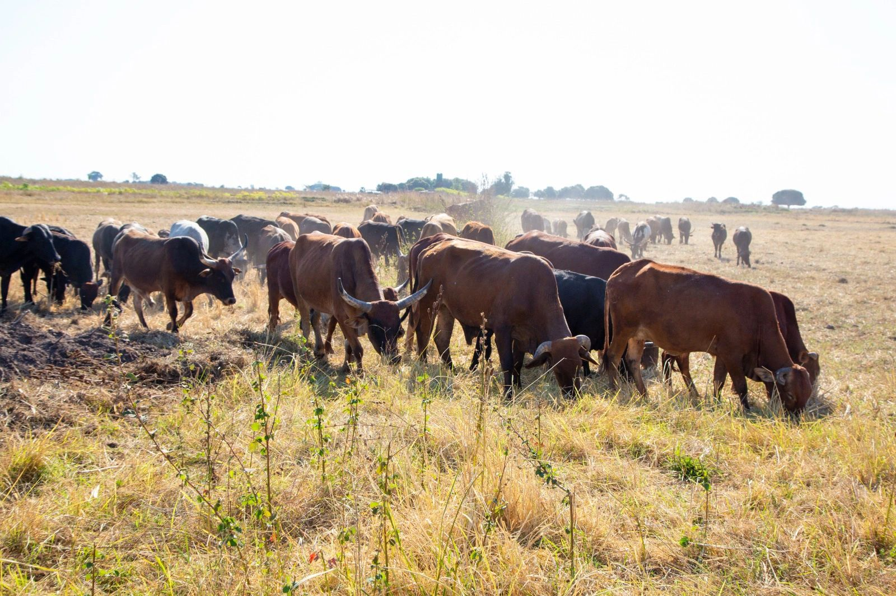
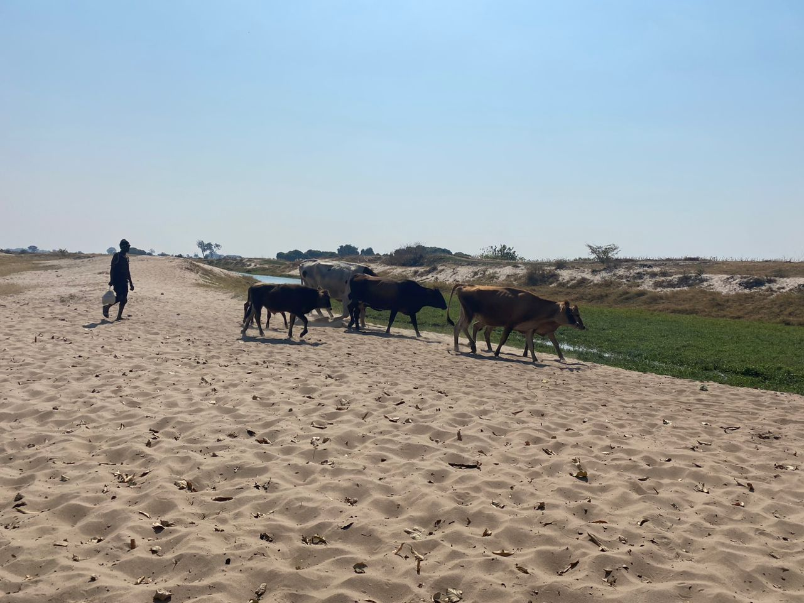

Creating measurable change across the Barotse rangelands through community-led restoration and sustainable development.
We combine community-led restoration, improved livestock management, and rigorous monitoring to create resilient landscapes and stronger rural livelihoods.

Thousands of households see improved incomes, resilience, and opportunity.
Restored rangelands, increased soil carbon, and richer biodiversity.
The Barotse rangelands are at a tipping point. Decades of pressure from over‑grazing, variable rainfall and limited access to regenerative practices have reduced productivity, weakened ecosystem services and increased vulnerability for pastoral and agro‑pastoral communities. Pro Green Earth exists to address these urgent needs and to create a resilient, scalable model that restores both landscapes and livelihoods.
Co‑design governance structures with traditional authorities and communities to ensure cultural fit and long‑term stewardship.
Scale regenerative grazing and restoration interventions across priority sites, driven by local capability building.
Deploy robust MRV (measurement, reporting & verification) systems and transparent benefit‑sharing that support market access for carbon and sustainable commodities.
Mobilise strategic partnerships and market channels that link communities to revenue streams and technical assistance.
Embed adaptive learning to refine practices, reduce leakage risk and ensure long‑term permanence of outcomes.